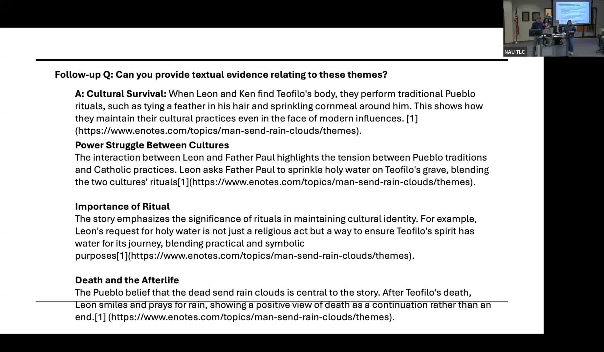

AI and Indigenous Literature: Examining Bias in Copilot
Students investigate how AI systems misrepresent Indigenous authors, peoples, and literary texts.
Presented by Jeff Berglund, Professor of English, Northern Arizona University, with student collaborators Taran Toombs, Sydney Dixon, and Daniella Farrow
About This Project
When students in English 243 (Multi-Ethnic Literature Survey) and English 245 (Indigenous Literature) at NAU used Microsoft Copilot to assist with literary analysis, they found that the tool produced surface-level, stereotyped responses and cited non-authoritative sources such as enotes.com rather than Indigenous scholars. Image generation requests for Indigenous subjects produced pan-tribal imagery and stock visual tropes that failed to represent the specific nations, communities, and urban contexts depicted in the texts being studied. For a novel like Tommy Orange's "There There," set in Oakland, Copilot generated rural and pan-tribal imagery unconnected to the actual work.
Berglund designed a series of inquiry assignments around this problem. Students generated prompts about assigned literary texts and then critically evaluated the AI's responses. A central activity asked students to generate AI-produced book covers for works by Indigenous authors including Tommy Orange, Louise Erdrich, Leslie Marmon Silko, and Laura Tohe, then compare those covers to published editions from around the world. This "judging a book by its cover" exercise made visible how AI pulls from dominant aesthetic conventions and recycles stereotypes. Students read scholarly articles on AI and Indigenous representation and used their findings to develop critical frameworks for evaluating AI-generated content in literary and cultural contexts.
Project Highlights

